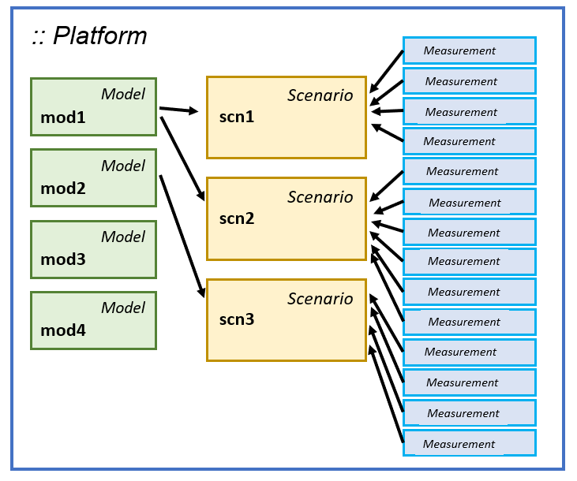

Introduction
HetaSimulator was designed as a modeling, simulations and parameters estimation environment for Quantitative Systems Pharmacology (QSP) and Systems Biology (SB) projects. A user is not intended to be experienced Julia programmer but rather a researcher having biological, biophisical and bioinformatical background. We have avoided complicated user interfaces and tried to keep the available computational methods simple for the basic modeling workflow.
The approach implies the "modeling platform" term which means all the components of a model: models structure, variables, parameters, scenarios and experimental dataset. From the practical point of view "modeling platform" is the same as project files. The representation of modeling platform in HetaSimulator package is an object of the Platform type. This object stores Models, Scenarios and Measurements.
Architecture
Model type represents one concrete namespace imported from Heta-compiler. It stores information about ODE system, initial values, events as well as default model-level parameters values. The HetaSimulator approach imply multi-model usage so simulations and parameters estimation can be done for several models simultaneously without specific preparations.
Scenario type stores additional conditions for simulating the model. For example, the same model can be run with or without some events, or differ by some specific parameters values like doses and others, or have some specific output variables (observables). Each Scenario is associated with a specific Model. Each model may be used in different scenarios.
Additionally Scenario instance is a container for the Measurement objects which describe experimental datasets. Measurements can be used for estimation of model parameters or some specific tasks like identifiability analysis and visualization.

There is no need to create more than one Platform object because it can store any number of Models and Scenarios. The advisable workflow is:
- Create one
Platformusingload_platformmethod - Update it by
Scenarios andMeasurements using formatted CSV tables or directly in code - Apply
sim,mc,fitand other methods to simulate the model, estimate the parameters, etc.
There are basic methods that can be applied to a Platform object, for example sim, mc and fit. These methods can be applied to a particular Scenario or to the whole Platform (all scenarios in platform). The last approach is preferable.
HetaSimulator vs heta-compiler
Both heta-compiler and HetaSimulator.jl are part of the Heta project initiative. They use the same standards of model notation and can be used in the same projects. Furthermore currently heta-compiler JS code is used internally in HetaSimulator.
When a user installs HetaSimulator in Julia the most appropriate version of heta compiler is installed as well.